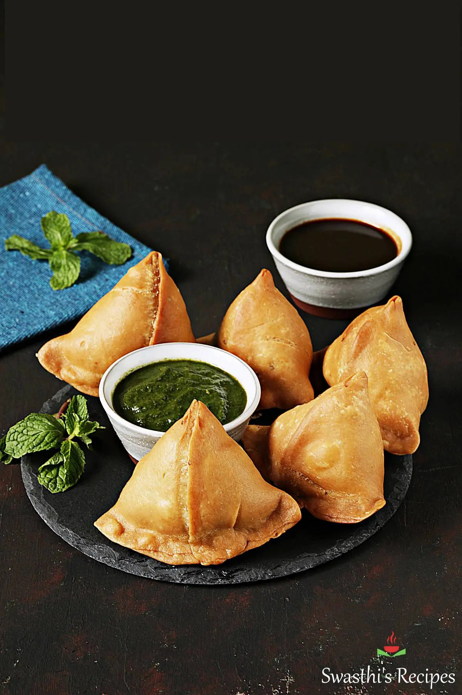

Samosa

Description
A samosa is a fried pastry from South Asia with a savory filling. Samosas can be triangular, cone-shaped, or
half-moon-shaped, and can be vegetarian or non-vegetarian. Fillings include spiced potatoes, onions, peas, meat,
fish, flour, vegetables, spices, chili peppers, ginger, and garlic, and can be mild, fragrant, or hot. The
pastry is flaky and crisp, but can also vary in texture.
Ingredients
- Ajwain Seeds
- Chili
- Ginger
- Frozen Peas
- Oil
- Coriander
- Tumeric
Steps
- The spiced potato filling;
- The Samosa dough;
- Making the Samosa parcels; and
- Frying. Sorry, there is no alternative! Do not try to bake them, you will be sorely disappointed!